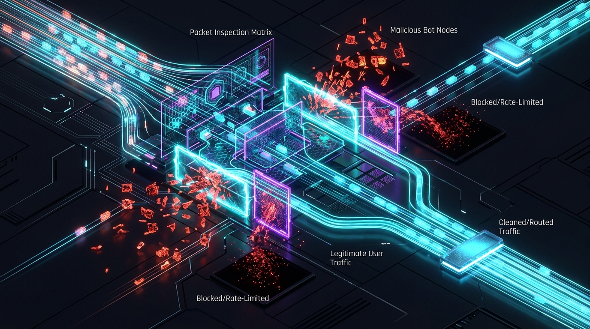

CASE 01 // PLATFORM
Custom Business Platform
Full-stack platform architecture spanning Laravel, WordPress, custom middleware, and internal administrative tooling.
13+ years of hands-on engineering, architecture, and technical leadership. I bridge high-level strategy and deep implementation across full-stack systems, custom business platforms, and applied AI workflows.
About
I'm a hands-on software architect and technical leader. My strength is turning complicated or poorly defined business problems into maintainable technical systems.
Most of my career has been spent building custom business applications, internal tooling, and web platforms — the kind of systems where the requirements aren't obvious and the solution isn't a template. I've done this work as a hands-on engineer, as a technical lead, and as a CTO.
I'm equally comfortable discussing architecture and business goals with leadership, then designing and building the system myself.
More recently, I've been doing applied AI work: building MCP servers, integrating LLMs into deterministic workflows, and creating AI-driven tooling that keeps controlled operations controlled rather than letting a model improvise where it shouldn't.
Full-stack development, database design, API architecture, and production systems across React, PHP, Laravel, MySQL, WordPress, and JavaScript.
System design, integration architecture, security planning, and building systems that remain maintainable at scale.
MCP servers, LLM integration, agentic workflows, and AI tooling designed with deterministic guardrails.
Technology strategy, developer mentoring, cross-functional collaboration, and translating business needs into technical direction.
What I Do
The systems I build, the problems I solve, and the technologies I work with — from architecture through production.
Selected Work
A selection of projects that represent the kind of work I do. Click any project to see the full architectural breakdown.
Full-stack platform architecture spanning Laravel, WordPress, custom middleware, and internal administrative tooling.
Custom MCP servers exposing deterministic tools to AI systems for operations, content management, and developer tooling.
Access-controlled download systems routing protected assets through application logic to prevent unauthorized distribution.
Diagnosed and blocked automated scraping that was consuming significant bandwidth, using application-level detection and response analysis.

Dual-platform architecture where WordPress handled content authoring while Laravel controlled application rendering and delivery.
Experience
May 2026 – Present
Item, Inc.
Leading technology strategy, architecture, and development across the organization's software platform and technical operations.
December 2022 – May 2026
Item, Inc.
Led web platform development, architecture decisions, AI integration, infrastructure, and developer team direction.
June 2022 – December 2022
Biltmore Estate
Corporate web development including substantial React development, custom WordPress plugins and Gutenberg blocks, responsive REST API-backed interfaces, accessibility audits and remediation, Figma UI prototyping, and AWS deployment environments.
March 2022 – May 2022
coach.today
Managed remote development teams, coordinated client communication, structured workflows and delegated technical tasks, introduced agile practices, and improved CRM visibility for project and client data.
February 2018 – June 2022
Cyber Leviathan
Full-project-lifecycle freelance development directly with clients — requirements, mockups, development, deployment, maintenance, and support.
May 2021 – November 2021
Mosaic Learning
Converted Adobe XD mockups into accessible WordPress sites, developed modular CSS and custom themes, integrated analytics and technical SEO improvements, and collaborated in agile teams using Jira, Basecamp, and Smartsheet.
Independent Work
I spent approximately eight years doing freelance web development, first under my own name and later through Cyber Leviathan, which I formalized in 2018 as a business entity for potential government work.
I worked directly with clients from initial requirements and mockups through development, deployment, maintenance, and ongoing support. The work included custom websites and full-stack applications using PHP, MySQL, JavaScript, jQuery, Bootstrap, and WordPress, along with responsive development and technical SEO.
That experience gave me years of direct responsibility for understanding client needs, making technical decisions, building and launching the work, and supporting it after release.
Duration
~8 years of independent work
Scope
Requirements, build, launch & support
Experience
Direct client delivery
Technology
Technologies I use in production, organized by function rather than listed alphabetically.
Engagement
I work best on technically complex projects where the problem extends beyond simply implementing a ticket.
My background is especially useful when architecture, implementation, business requirements, and long-term maintainability all need to be considered together. I'm most effective when I can understand the business context behind the technical decisions — not just the spec, but why the spec exists.
If you're dealing with a system that needs careful technical thinking — whether that's a new build, a legacy modernization, an AI integration, or technical leadership — those are the kinds of problems I’m particularly well suited to solving.
Inquiries regarding software engineering, architecture, technical leadership, and consulting can be made through the contact page.